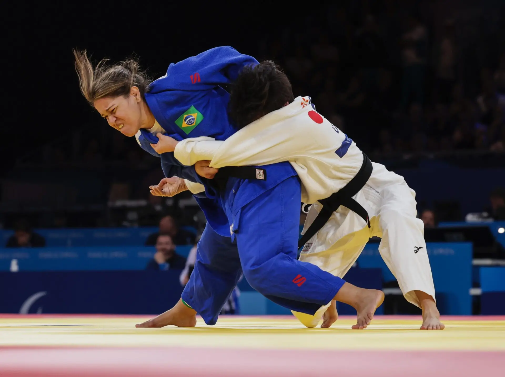

Judô no Brasil: do tatame japonês ao pódio olímpico
Como uma arte marcial criada em 1882 se tornou uma das maiores potências esportivas do país
Eduardo Oliveira—
São Paulo
A Origem do Judô
O judô tem uma história fascinante que mergulha nas antigas tradições marciais do Japão. Ele foi criado em 1882 pelo mestre Jigoro Kano, que pegou os princípios e técnicas letais do jiu-jitsu tradicional dos samurais e os transformou em uma arte marcial moderna, focada no desenvolvimento físico, moral e mental. Kano retirou os golpes mais perigosos para que a prática pudesse ser segura e competitiva, transformando-o inclusive em esporte olímpico em 1964. No Brasil, o judô encontrou um terreno extremamente fértil: chegou no início do século XX, trazido por imigrantes japoneses, com destaque para figuras como Mitsuyo Maeda (Conde Koma) que também é responsável por trazer o jiu-jitsu, e hoje o país é uma das maiores potências mundiais na modalidade, colecionando medalhas olímpicas e mundiais.
Origem do judô no Japão.
Como o Judô funciona?
Embora seja uma arte marcial de combate corpo a corpo, a dinâmica das lutas de judô é regida por regras rígidas de respeito e técnica. O objetivo principal é projetar o adversário de costas no chão com força, velocidade e controle (o famoso Ippon, que encerra a luta imediatamente), ou imobilizá-lo, esticar o braço numa chave ou aplicar um estrangulamento até que ele bata em sinal de desistência. Os combates acontecem no tatame, duram alguns minutos (no tempo regulamentar) e os atletas são divididos por categorias de peso. Além de tudo, a disciplina e o cumprimento obrigatório aos adversários e árbitros (através de saudações) são leis fundamentais do esporte.
Luta oficial de judô.
O Brasil no cenário
O Brasil é um verdadeiro gigante do judô no cenário internacional, impulsionado por um trabalho sólido da Confederação Brasileira de Judô (CBJ) e por circuitos nacionais fortíssimos. O país é presença garantida no topo dos pódios em Campeonatos Mundiais e Jogos Olímpicos. É impossível falar dessa história sem exaltar grandes ícones que inspiram gerações, como Aurélio Miguel (primeiro ouro olímpico do judô brasileiro em Barcelona 1992), Flávio Canto, e as campeãs olímpicas e mundiais Sarah Menezes e a inspiradora Rafaela Silva, que superou barreiras gigantescas para conquistar o mundo.

Judoca brasileiro em pódio olímpico.
A Importância na Vida dos Atletas
Praticar judô vai muito além da defesa pessoal; é uma verdadeira escola para a vida. O esporte desenvolve força, flexibilidade, equilíbrio, coordenação motora e um condicionamento físico impressionante. No aspecto mental e social, o judô ensina valores profundos como o respeito mútuo, a disciplina, a resiliência e a humildade, afinal, aprender a cair no tatame é o primeiro passo para saber se levantar diante dos desafios da vida. Valorizar o judô é apoiar uma modalidade que educa e transforma cidadãos.